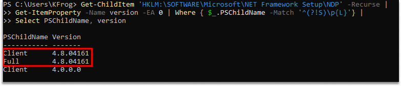

Related Query
-
".NET on the Netwrix application server is End-Of-Life (EOL). Is it safe to remove it?"
Question
Which version of .NET is required for Netwrix Activity Monitor?
Answer
.NET Framework 4.7.2 or newer is required. You can also navigate to the Netwrix Activity Monitor landing page for the product Requirements located under Getting Started.
NOTE: .NET Framework is not the same as ASP.NET Core, and having one does not mean you have the other. ASP.NET Core and .NET Desktop Runtime should appear on the list of installed Apps & Features; however, .NET Framework does not appear on that list. You can check which versions of .NET Framework you have installed by running the following command in PowerShell:
Get-ChildItem 'HKLM:\SOFTWARE\Microsoft\NET Framework Setup\NDP' -Recurse | Get-ItemProperty -Name version -EA 0 | Where { $_.PSChildName -Match '^(?!S)\p{L}'} | Select PSChildName, versionExample:
